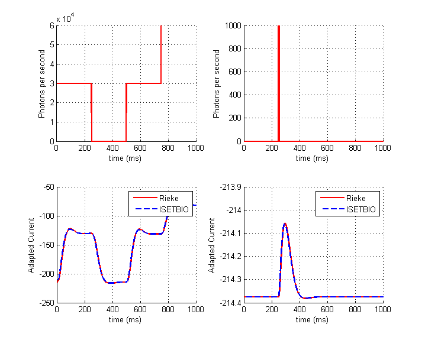
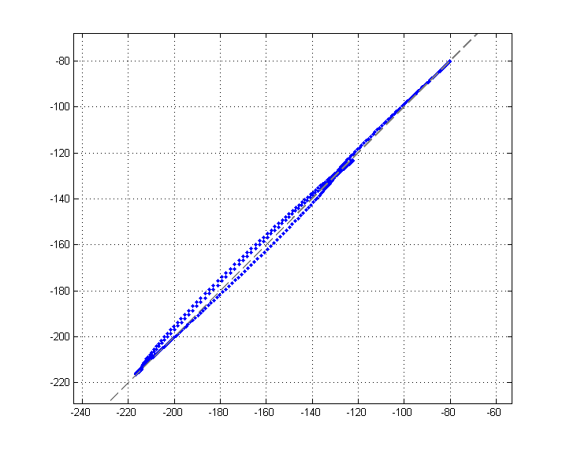
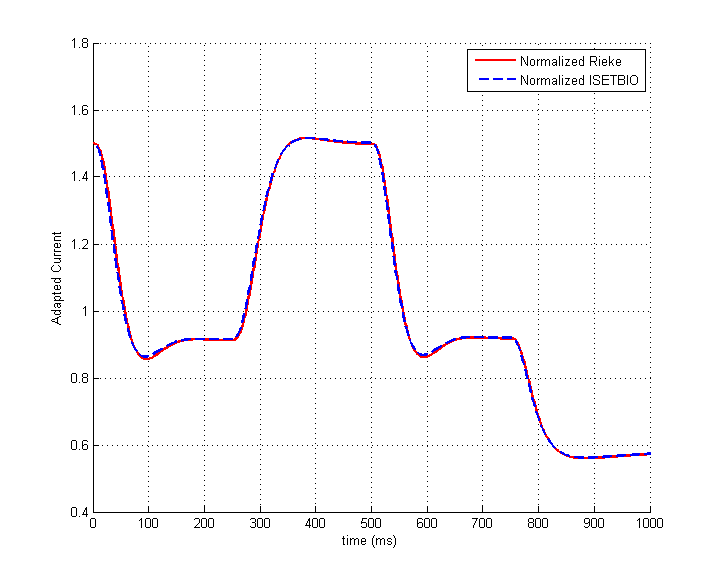

v_rieke
Implement some tests comparing the s_fredXXX script with our implementation of that script using several functions
HJ/BW ISETBIO Team, Copyright 2014
Contents
The Rieke code
This produces riekeStim1, riekeStim2, riekeCur1, riekeCur2
clear; s_initISET; s_fredConeModel;
ISETBIO Implementation
create human sensor structure
sensor = sensorCreate('human'); % set photon absorptions nSample = length(riekeStim1); sensor = sensorSet(sensor, 'size', [1 1]); % Just 1 cone sensor = sensorSet(sensor, 'photon rate', ... reshape(riekeStim1, [1 1 nSample])); % compute adaptation params.bgVolts = 0; [~, isetbioCur1] = coneAdapt(sensor, 'rieke', params); % set photons of stimulus 2 (Impulse) sensor = sensorSet(sensor, 'photon rate', ... reshape(riekeStim2, [1 1 nSample])); % compute adaptation [~, isetbioCur2] = coneAdapt(sensor, 'rieke', params);
Plot and compare the results
new figure
vcNewGraphWin; % plot stimulus subplot(2,2,1); hold on; grid on; plot(1:nSample, riekeStim1, 'r', 'lineWidth', 2); xlabel('time (ms)'); ylabel('Photons per second'); subplot(2,2,2); hold on; grid on; plot(1:nSample, riekeStim2, 'r', 'lineWidth', 2); xlabel('time (ms)'); ylabel('Photons per second'); % plot adapted current subplot(2,2,3); hold on; grid on; plot(1:nSample, riekeCurrent1, 'r', 'lineWidth', 2); plot(1:nSample, isetbioCur1(:), '--b', 'lineWidth', 2); xlabel('time (ms)'); ylabel('Adapted Current'); legend('Rieke', 'ISETBIO'); subplot(2,2,4); hold on; grid on; plot(1:nSample, riekeCurrent2, 'r', 'lineWidth', 2); plot(1:nSample, isetbioCur2(:), '--b', 'lineWidth', 2); xlabel('time (ms)'); ylabel('Adapted Current'); legend('Rieke', 'ISETBIO');
Plot the two currents against one another
vcNewGraphWin; plot(riekeCurrent1(:),isetbioCur1(:),'.') mean(riekeCurrent1(:) ./ isetbioCur1(:)) % Compare the means for the impulse grid on; axis equal; identityLine; disp(mean(riekeCurrent2(:)) / mean(isetbioCur2(:))) % Scale and plot adapted currents vcNewGraphWin; hold on; grid on; plot(1:nSample, riekeCurrent1/mean(riekeCurrent1(:)), 'r', 'lineWidth', 2); plot(1:nSample, isetbioCur1(:)/mean(isetbioCur1(:)), '--b', 'lineWidth', 2); xlabel('time (ms)'); ylabel('Adapted Current'); legend('Normalized Rieke', 'Normalized ISETBIO');
ans =
1.0017
1.0000
 